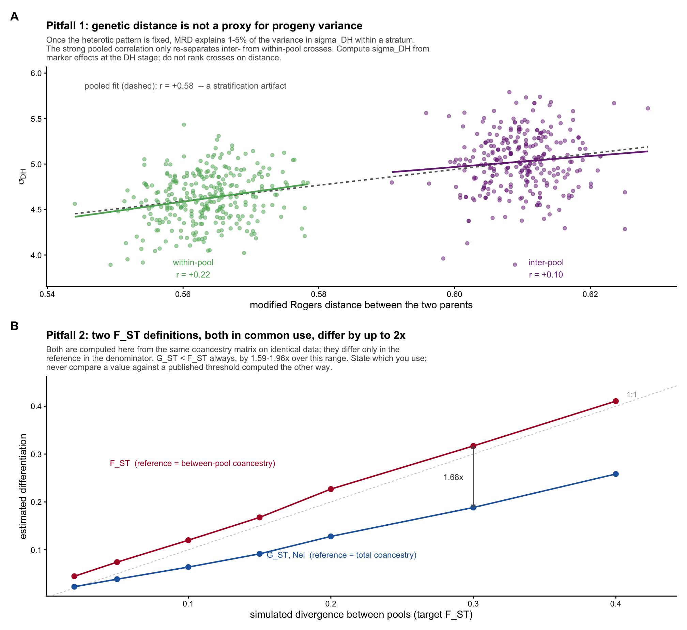
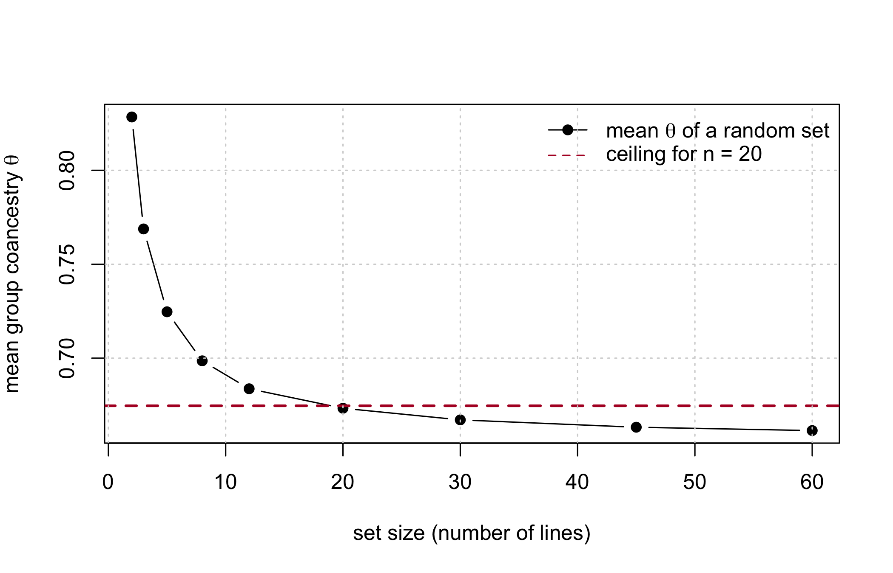
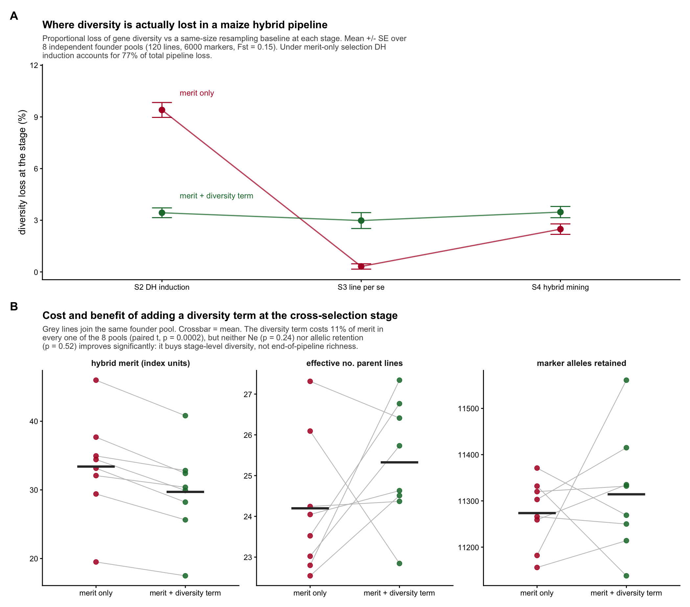

The previous chapters established which metrics to use. This one places them at the four stages S1-S4 of a hybrid maize programme (Table 1.1 of Section 1.1: S1 conserving the heterotic groups, S2 choosing parents and crosses for doubled-haploid (DH) induction, S3 selecting lines per se, S4 hybrid mining), and names five traps – each one a thing that looks correct, returns a number, and is wrong.
Three rules govern everything below.
Identities. An exact algebraic identity is asserted with stopifnot() in the chunk that shows it, to the tolerance stated there, so that the render stops if it stops being true. An identity shown without such an assertion is not claimed as verified.
The metric set is the recommendation of Chapter 12: molecular coancestry as the kernel, gene diversity \(GD = 1 - \theta\) as the scale, proportional loss \(\alpha\) against a same-size resampling baseline and the effective number of parents \(N_{e,\text{par}}\) as the second constraint inside the optimiser; \(N_s\) only as a rescaling of \(\theta\) (a value in \([1/2, 1]\) on molecular coancestry, not a head count, Section 11.3); allelic richness as one of several metrics that vary at fixed \(\theta\), to be read on the returned plan. This chapter uses \(\theta\), \(GD\) and the same-size baseline at every stage, \(N_{e,\text{par}}\) at S4 and in the ledger, and allelic richness only as the ledger’s alleles column.
Assumptions, declared once. Parents are inbred or doubled-haploid lines coded 0/1 at biallelic markers (A2 of Section 10.1), so \(\mathbf{f}\) is identity in state with no base population. The simulated merit is additive in the marker effects (no dominance). The simulation parameter fst is the Balding-Nichols parameter (Balding and Nichols 1995), written \(F_{BN}\) throughout (Appendix A), a neutral divergence of each pool from one ancestral population; \(F_{ST}\) is reserved for the statistic of Trap 2 (Section 13.2.1). No frozen base population is used: every loss is measured against a random subset of the same size drawn from the set being selected from (Section 11.9).
Scales differ between the chunks, and the text names them. The live chunks of S1 (except the Trap 3 sweep), S3 and S4 use one simulated world of 30 + 30 lines, 3,000 markers and 900 hybrids; the Trap 3 sweep uses the teaching scale (25 + 25 lines, 2,000 markers, Section 10.1). Five artefacts are cached results of an external study whose code is not in this repository: fst_definitions.csv, dist_vs_variance.csv, pipeline_loss_ledger.csv, metric_pitfalls.png and pipeline_loss.png. They cannot be regenerated here and are never called reproducible (Appendix C lists them); what is computed from the three csv files is a re-analysis of the cached file, not a reproduction of the study. The scale of the Trap 2 table and the Trap 4 data is unrecorded; the ledger’s is given where it is used.
Molecular coancestry \(f_{ij}\) is the probability that an allele drawn at random from individual \(i\) is identical in state to one drawn from \(j\). For inbred lines coded 0/1 at \(m\) biallelic markers,
with \(x_{ik} \in \{0, 1\}\) the allele of line \(i\) at marker \(k\) (\(\mathbf{G}^L\) of Appendix A). Group coancestry of a set of \(n\) lines is the mean of the full submatrix including the diagonal, \(\theta = n^{-2}\sum_i\sum_j f_{ij}\) (Equation 11.1), with \(GD = 1 - \theta\) and \(N_s = 1/(2\theta)\); on molecular coancestry \(\theta \in [1/2, 1]\) for a set, so \(N_s\) is a monotone rescaling of \(\theta\) and not a number of lines (Section 11.3).
The diagonal is not a technicality. It is why a small set always looks highly coancestral, and it is the reason the naive greedy constraint in S3 fails.
13.1.1 Trap 1: modified Rogers distance is the same statistic
Reporting both the modified Rogers distance (MRD) and coancestry as separate evidence is reporting one number twice. For inbred lines coded 0/1 the distance between lines is \(\text{MRD}_{ij} = \bigl[m^{-1}\sum_k (x_{ik} - x_{jk})^2\bigr]^{1/2}\), so \(f_{ij} = 1 - \text{MRD}_{ij}^2\) by definition of both (Equation 13.1). The check below computes the distance directly from the genotypes (dist()), not through the package’s own mrd_matrix():
The largest absolute deviation over the \(L^2\) entries is 2e-16 (asserted below \(10^{-12}\)).
If a diversity report shows a distance tree and a coancestry table as mutual corroboration, they are the same analysis in two coordinate systems. The identity holds for homozygous 0/1 lines; it is not claimed for heterozygous hybrids, which this chapter does not test.
13.2 S1: conserving the heterotic groups
Two quantities can move in opposite directions: within-pool diversity falls and between-pool divergence rises. Section 1.1 derives that opposition for drift in two closed pools of equal weight and says that the argument does not cover selection; the rise of \(GD_{BS}\) under run_cycles() is a simulation result there, with drift and selection acting together. A single pool-wide statistic sees only the sum, so a programme monitoring only total diversity can look stable while the two terms move apart. That is the reason to monitor them separately, and it holds whatever the cause of the movement.
The partition is exact for any grouping of the lines into pools \(p\) (here two, A and B) with census weights \(\varpi_p = n_p/L\), \(\theta_{pq}\) the mean of \(f_{ij}\) over \(i\) in pool \(p\) and \(j\) in pool \(q\) (Equation 3.9 of Chapter 3, after Caballero and Toro (2002)):
In Equation 13.2\(\theta_T\) is the coancestry of the whole set; \(\theta_w = \sum_p \varpi_p\theta_{pp}\) is the census-weighted mean coancestry within pools, so \(GD_{WS} = 1 - \theta_w\) (the column GD_within of the code, \(GD_{BI}\) for inbred lines); \(\theta_{AB}\) is the mean coancestry between the pools (called theta_B in theta_decompose(), but theta_pools() uses that name for within-pool B; this chapter writes \(\theta_{AB}\)). The between-pool share of gene diversity is \(GD_{BS} = \theta_w - \theta_T\). In the symbols of Chapter 3, \(\theta_T\) is \(\bar f\) and \(\theta_w\) is \(\tilde f\) (Appendix A). Here \(\theta_{AB}\) is census-weighted (the mean of \(f_{ij}\) over the \(A \times B\) line pairs), not the usage-weighted \(\theta_{AB}\) of Equation 11.10.
13.2.1 Trap 2: two statistics written \(F_{ST}\) differ by up to a factor of two
Two statistics computed from the same coancestry matrix carry the symbol \(F_{ST}\) in different places, and they are not interchangeable. The \(F_{ST}\) of this book (Chapter 3, Equation 3.7; Section 1.2.4) is referenced to the coancestry of the whole set:
the last form being Nei’s \(G_{ST}\)(Nei 1973) with plug-in gene diversities (code column Gst_Nei); Caballero and Toro (2002) give the partition in coancestry form. The other statistic is referenced to the coancestry between pools:
(code column Fst_Wright; “Wright” is the code’s label, not a claim about a paper, Chapter 10). Chapter 3 cites no external source for the use of this form as \(F_{ST}\) and does not use it, and this chapter does not establish that any published value was computed this way. It is carried here only because the package’s s1_monitor() logs it and a reader who compares two \(F_{ST}\) values must know which one each is.
Equation 13.5 is asserted in the chunk above. The ratio is 2 only as \(F^{\text{btw}}_{ST} \to 0\) and falls as divergence grows; it is exact for equal pool weights, which both the live pools and (inferred from the identity holding to 4e-15 in all rows) the cached table have. Across simulated divergence the two never converge (Table 13.1):
Table 13.1: The two statistics across a range of the Balding-Nichols parameter \(F_{BN}\) (cached fst_definitions.csv, external study, no generating code here; one row per setting, pool sizes, marker number and replication unrecorded). \(F_{ST} = GD_{BS}/GD_T\) is the column Gst_Nei, \(F^{\text{btw}}_{ST}\) is Fst_Wright; the ratio equals \(2 - F^{\text{btw}}_{ST}\) in every row (asserted), so it falls from 1.96 to 1.59 as divergence rises.
F_BN
F_ST
F_ST_btw
ratio
0.02
0.0228
0.0446
1.9554
0.05
0.0385
0.0742
1.9258
0.10
0.0638
0.1200
1.8800
0.15
0.0915
0.1676
1.8324
0.20
0.1279
0.2268
1.7732
0.30
0.1883
0.3170
1.6830
0.40
0.2584
0.4106
1.5894
State which reference you used, and never compare a value against another report’s without knowing which reference that report used.
13.2.2 Trap 3: \(F_{ST}\) is the wrong target to maximise
Chapter 5 (Section 5.8) shows, in expectation over Balding-Nichols draws and at \(d_k \equiv 1\), that expected heterosis does not depend on \(F_{BN}\): every unit gained in the divergence term is paid for out of the shared term. What moves it is divergence landing on the dominance loci. The question here is which of the frequency-side statistics of the S1 panel carry something that \(F_{ST}\) does not. The sweep below redraws both pools at four values of \(F_{BN}\), 20 seeds each (seeds 1 to 20 at every level, fixed in advance), at the teaching scale (Table 13.2):
Table 13.2: Trap 3 sweep: mean over 20 seeds (seeds 1 to 20 at every level) of \(F_{ST}\), \(F^{\text{btw}}_{ST}\) (F_ST_btw), \(GD_{WS}\), frac_opposite_fixed and mean_sq_delta_p at four values of the Balding-Nichols parameter \(F_{BN}\), with the standard deviation over seeds (sd_ columns) of \(F_{ST}\), \(GD_{WS}\) and mean_sq_delta_p. Simulated pools of 25 + 25 lines and 2,000 markers, redrawn for every seed.
F_BN
F_ST
F_ST_btw
GD_WS
frac_opposite_fixed
mean_sq_delta_p
sd_F_ST
sd_GD_WS
sd_msdp
0.05
0.0465
0.0889
0.3325
0.0000
0.0325
0.0013
0.0026
0.0009
0.15
0.1007
0.1830
0.2981
0.0005
0.0668
0.0034
0.0029
0.0026
0.25
0.1613
0.2777
0.2622
0.0051
0.1008
0.0042
0.0029
0.0029
0.40
0.2697
0.4247
0.2108
0.0321
0.1557
0.0077
0.0033
0.0046
Result. Over the 80 draws, mean_sq_delta_p equals \(2\,F_{ST}\,GD_T\) to 5e-15 (asserted), and its correlation with \(F_{ST}\) is 0.9984. The means per level of \(F_{ST}\) run from 0.047 to 0.270 and those of mean_sq_delta_p from 0.032 to 0.156; \(GD_{WS}\) falls from 0.333 to 0.211 along the same sweep (the s.d. over seeds are in the table), while frac_opposite_fixed stays between 0.0000 and 0.032.
Interpretation. In this neutral simulation mean_sq_delta_p is \(F_{ST}\) rescaled by \(2\,GD_T\) and carries nothing that \(F_{ST}\) and \(GD_T\) do not; the frequency-side statistics do not decouple from \(F_{ST}\) here. The identity is algebra for equal pool sizes, so it does not depend on neutrality, but the chapter has not examined pools whose divergence was produced by selection toward different targets. What decouples from \(F_{ST}\) is expected heterosis, which is not in this chunk (Table 5.13 of Chapter 5). mean_sq_delta_p is worth logging as the unweighted (\(d_k \equiv 1\)) divergence term of expected heterosis in the units of that chapter (Chapter 5, “Reading the S1 panel”: half of it is \(GD_{BS}\) and it cannot carry the weighting by \(d\)), not as an independent signal. frac_opposite_fixed is near zero over most of this sweep (largest level mean 0.032 at \(F_{BN}\) = 0.40), so in these simulations it cannot discriminate between levels except at the top; no value for a real dent-versus-flint pair is sourced here.
The sweep varies \(F_{BN}\) and not the number of oppositely fixed loci, so the fall of \(GD_{WS}\) is a cost of divergence of the pools as a whole in these simulations, and the cost of fixed opposite loci specifically was not isolated. Hold \(F_{ST}\) in a band, not at a maximum: the reasons are the two of Chapter 5 (a diversity-side one, the fall of within-pool gene diversity shown above, and a prediction-side one); this chapter does not establish the width of the band, which is a decision about how much within-pool diversity the programme will spend.
13.2.3 The S1 monitoring panel
Table 13.3 is the output of s1_monitor() on the simulated world of this chapter:
Show code
fmt(s1_monitor(GL, pool, cycle =12), 4)
Table 13.3: S1 monitoring panel from s1_monitor() on one simulated world of 30 + 30 lines and 3,000 markers (seed 12; cycle = 12 is a label, not a time point). GD_within, GD_total, GD_A, GD_B: gene diversity within pools, of the whole set and of each pool; Gst_Nei, Fst_Wright: the two differentiation statistics of Trap 2; Ns_total: status number of the whole set; frac_opposite_fixed, mean_abs_delta_p, mean_sq_delta_p: divergence of pool allele frequencies.
cycle
GD_within
GD_total
Fst_Wright
Gst_Nei
Ns_total
GD_A
GD_B
frac_opposite_fixed
mean_abs_delta_p
mean_sq_delta_p
12
0.3046
0.3386
0.1824
0.1004
0.7559
0.305
0.3042
0
0.2003
0.068
GD_within is \(GD_{WS}\), the census-weighted mean over pools, GD_total is \(GD_T\), Gst_Nei the book’s \(F_{ST}\) and Fst_Wright\(F^{\text{btw}}_{ST}\); GD_A and GD_B are the per-pool values; Ns_total is \(1/(2\theta_T)\) and, as above, a rescaling of \(\theta_T\) in \([1/2, 1]\), not a number of lines (a value of about 0.76 is not three quarters of a line). cycle = 12 is a label passed to the function; the chunk is one draw, not a time series.
Log this every cycle and plot it as a time series. Defend GD_A and GD_B per pool; watch mean_sq_delta_p as the divergence term of heterosis at \(d_k \equiv 1\); treat \(F_{ST}\) as a descriptor, not an objective. Chapter 23 runs fifteen cycles, but logs a different set of columns (index, GD, GD_BS, F_hom, F_drift, max_line), so it does not show this panel as a time series.
The empirical anchor is Kadoumi et al. (2025), who report for forty years of one commercial European dent maize programme that differentiation between heterotic groups increased while intragroup diversity decreased (abstract-level reading; Section 1.1 gives the numbers and their limits: the between-group Hamming distance fell slightly while \(F_{ST}\) rose, the within-group decline sits in one group that merged others, and the authors can only speculate about selection as the cause). That is one programme observed with both movements, not a test of this panel. See Chapter 21.
13.3 S2: choosing crosses for DH induction
The diversity of a DH pool can be written exactly from the parents and how often they are used, without genotyping the DH lines, which makes S2 the stage where the cheapest exact algebra is available. How much diversity S2 costs in a simulated pipeline is measured in Section 13.6, from a cached file, and the answer depends on how the crosses are chosen.
13.3.1 Three identities
For a DH family from cross \((i,j)\) of two inbreds, each locus is inherited from \(i\) or \(j\) with probability 1/2 and then doubled; the expectations below need only this per-locus marginal, so they hold with or without linkage.
(a) Coancestry between two DH sibs of the same family: \(\mathbb{E}[f] = (1 + f_{ij})/2\).
(b) Coancestry between a DH of family \((i,j)\) and one of \((k,l)\): \(\mathbb{E}[f] = (f_{ik} + f_{il} + f_{jk} + f_{jl})/4\).
(c) Group coancestry of a DH pool from crosses \(c = 1 \dots C\), each contributing \(n_c\) lines, \(n_{DH} = \sum_c n_c\), with \(f_c = f^L_{i_c j_c}\) the coancestry of the parents of cross \(c\):
with \(\mathbf{w}\) the parent-usage weights, \(w_a = k_a/(2n_{DH})\), \(k_a\) the number of DH lines whose cross has \(a\) as a parent (the same construction as Section 12.1 for hybrids). The first term treats every pair of DH lines, a line with itself included, as a pair of sibs of one family; the second corrects the \(n_{DH}\) diagonal pairs, whose coancestry is 1, not \((1 + f_c)/2\). It is \(O(1/n_{DH})\) and worth keeping. Derivation: by (a) and (b) the expected coancestry of the pair (line of \(c\), line of \(c'\)) is \(\bar F_{cc'}\), the mean of \(\mathbf{f}^L\) over the four parent pairs, and \(n_{DH}^{-2}\sum_{c,c'} n_c n_{c'}\bar F_{cc'} = \mathbf{w}^\top\mathbf{f}^L\mathbf{w}\). The chunk below checks (a) to (c) numerically (Table 13.4).
Table 13.4: Identities (a) to (c) of S2 on the simulated world of 30 + 30 lines and 3,000 markers (seed 88 for the crosses, 89 for gene dropping). crosses_drawn, rows_kept, distinct_unordered: number of crosses drawn, kept after the self-pairs are dropped, and distinct as unordered pairs. with_self_term, without_self_term: \(\theta_S\) of Equation 13.6 with and without its second term; oracle: the literal pair-by-pair average. mc_a, formula_a and mc_b, formula_b: gene-dropping estimate and formula of (a) and (b).
quantity
value
crosses_drawn
20
rows_kept
19
distinct_unordered
18
with_self_term
0.701091
without_self_term
0.700884
oracle
0.701091
mc_a
0.849444
formula_a
0.849333
mc_b
0.690763
formula_b
0.691
The 20 draws of two pool-A parents with replacement leave 19 crosses after the self-pairs are dropped, of which 18 are distinct as unordered pairs, all within pool A; the weights \(n_c = 40\) are equal. (c), Equation 13.6, is asserted against the literal pair-by-pair average; (a) and (b) are asserted against gene dropping with 2,000 pairs (tolerance 0.002; the Monte Carlo s.e. is of the order of \(10^{-4}\) on 3,000 markers).
NoteThe key structural result of S2
The diversity of the DH pool is a quadratic form in which parents you use and how often. The DH lines never need to be genotyped – or to exist – for their pool diversity to be optimised. You can evaluate a crossing plan before making a single cross.
13.3.2 Progeny variance, and the usefulness criterion
Assume an additive model with marker effects \(\beta_k\) (the effect of the allele coded 1 against 0), inbred parents coded 0/1, and free recombination between loci, so that the segregation indicators at distinct loci are independent. Then only loci segregating in the cross contribute, each with \(\text{Var}(x_k) = 1/4\), and
With linkage the covariances between loci enter and this is not the variance (the simulations of Chapter 7 and Chapter 6 carry genetic maps; this chapter’s formula is the free-recombination case). The usefulness criterion of the cross of lines \(a\) and \(b\) is \(UC_{ab} = \mu_{ab} + i\,h\,\sigma_{DH(a,b)}\): \(\mu_{ab}\) the mean of the DH family (the mid-parent value under additivity), \(i\) the selection intensity of the selected fraction \(q\) (Equation 4.1 of Chapter 4; \(i\) is not a line index, the lines of a cross are indexed \(a\), \(b\) here), \(h\) the accuracy with which the criterion predicts the value of a DH line (the \(r\) of that equation); h = 0.6 below is a value chosen for the illustration, not an estimate. Lehermeier et al. (2017) give the criterion with a progeny variance predicted from markers; the package documentation attributes it to Schnell and Utz (1975), which is not in this book’s bibliography and was not checked here. The chunk below computes \(\sigma_{DH}\) and \(UC\) for the crosses of the previous chunk and checks \(\sigma_{DH}\) against gene dropping (Table 13.5).
Show code
sig <-sigma_dh_crosses(crosses, GL, sim[["beta"]])mu <-rowMeans(cbind(GL[crosses[, 1], ] %*% sim[["beta"]], GL[crosses[, 2], ] %*% sim[["beta"]]))uc <-usefulness_criterion(mu, sig, i =sel_intensity(0.05), h =0.6)# gene dropping at free recombination for the first crossset.seed(90)dh1 <-dh_draw(crosses[1, 1], crosses[1, 2], 20000) %*% sim[["beta"]]sig_rel_err <-abs(sd(dh1) / sig[1] -1)stopifnot(sig_rel_err <0.03)knitr::kable(fmt(head(data.frame(p1 = crosses[, 1], p2 = crosses[, 2],mu = mu, sigma_dh = sig, UC = uc), 6), 3))
Table 13.5: First six crosses of the S2 example (parents p1 and p2, line indices in the simulated world of 30 + 30 lines and 3,000 markers): mu, mean of the DH family (mid-parent value of the additive merit); sigma_dh, progeny standard deviation from Equation 13.7; UC, usefulness criterion with \(i\) = sel_intensity(0.05) and \(h\) = 0.6.
p1
p2
mu
sigma_dh
UC
23
27
0.930
4.609
6.634
13
11
-5.977
5.032
0.251
22
21
-3.481
5.264
3.034
7
19
-7.343
5.063
-1.076
19
1
-11.512
5.285
-4.971
2
12
-2.152
4.934
3.955
Equation 13.7 agrees with gene dropping on the first cross to 0.5 % of \(\sigma_{DH}\) (20,000 DH lines; the s.e. of an s.d. from that many draws is 0.5 %; asserted below 3 %). sel_intensity(0.05) is 2.0627, the normal-theory intensity \(\varphi(z_{1-q})/q\); Chapter 4 already checks that function.
13.3.3 Trap 4: genetic distance is not a proxy for progeny variance
Ranking crosses by marker distance has the argument that more distant parents segregate for more loci. Once the heterotic pattern is fixed, the cached data show that this explains little (Table 13.6 and Figure 13.1):
Table 13.6: Distance against progeny standard deviation, within stratum and pooled (cached dist_vs_variance.csv, external study, no generating code here). 300 crosses per stratum, drawn from one set of founder lines, so the crosses share parents and are not independent replicates; the within-pool stratum is A x A only. cor_MRD_nseg: correlation of the distance with the number of segregating loci.
stratum
crosses
cor
R2
cor_MRD_nseg
inter-pool (A x B)
300
0.1029
0.0106
1
within-pool (A x A)
300
0.2188
0.0479
1
pooled
600
0.5760
0.3317
1

Figure 13.1: Cached figure metric_pitfalls.png (external study, no generating code here; scale unrecorded). Panel A: progeny standard deviation against modified Rogers distance – the pooled correlation only re-separates inter- from within-pool crosses and explains little within either stratum. Panel B: the two statistics of Trap 2 on identical data. The figure’s own labels use the names this chapter withdrew: its “F_ST (reference = between-pool coancestry)” is \(F^{\text{btw}}_{ST}\) here, its “G_ST, Nei” is the book’s \(F_{ST}\), and its title phrases “both in common use” and “published threshold” are not claims of this chapter.
Within the strata the distance explains 1.1 % and 4.8 % of the variance of \(\sigma_{DH}\), against 33.2 % pooled (Table 13.6). Within a stratum the distance is a near-linear function of the number of segregating loci (cor_MRD_nseg), so a raw count of segregating loci explains the same variance. Inference, limited by one dataset of unrecorded scale and an additive simulated model: distance adds little beyond “are these parents in different pools”, which is already known. The consequence for a ranking of crosses, for example how many of the top crosses on UC are also top on distance, was not computed.
Rank crosses on sigma_dh_crosses() computed from marker effects, not on distance.
13.4 S3: selecting lines per se
Two points of practice.
Apply the constraint within each pool separately. The partition shows why this is the right unit: \(\theta_T\) contains the between-pool terms, so a pooled constraint can be satisfied by keeping the pools apart while both erode internally, which is what S1 exists to prevent. This is an argument from the algebra; the demonstration in this section is pooled (the 60 lines of both pools); select_lines_constrained() has no pool argument, so the within-pool version is one call per pool, run at the end of Trap 5 (Section 13.4.1).
Measure loss against a same-size resampling baseline (Section 11.9).
Table 13.7: Gene diversity of the top 20 lines by merit against 300 random sets of 20 lines (loss_vs_resampling(), seed 1; one simulated world of 30 + 30 lines and 3,000 markers). GD_selected: \(GD\) of the top 20; GD_random_mean: mean \(GD\) of the random sets; loss_pct: \(100,(GD_{\text{random}} - GD_{\text{selected}})/GD_{\text{random}}\); percentile: fraction of random sets with \(GD\) below that of the top 20.
Table 13.8: Pool of origin of the top 20 lines by merit (number of lines).
pool
Freq
A
6
B
14
The top 20 by merit take 6 lines from pool A and 14 from pool B, and lose 0.80 % of gene diversity against random sets of 20 (one world, one set of 300 resamples; Table 13.7 and Table 13.8).
13.4.1 Trap 5: the incremental greedy constraint silently returns nothing
The natural implementation – “add the next-best line while \(\theta\) stays below the ceiling” – cannot work. Group coancestry includes the diagonal, so a single line has \(\theta = 1\) and any pair has \(\theta = (1 + f_{ij})/2\). A ceiling calibrated on a large pool is unreachable at small set sizes; the greedy never gets past the first candidate and returns the empty set without a warning. The chunk runs that rule (Table 13.9):
Table 13.9: The incremental greedy rule at the ceiling for \(n\) = 20 and a permitted loss of 0.5 % (simulated world of 30 + 30 lines and 3,000 markers). ceiling: the ceiling on \(\theta\); theta_single_line: \(\theta\) of a single line, \(f_{11}\); theta_best_pair: smallest \(\theta = (1 + f_{ij})/2\) over all pairs; any_pair_admissible: whether any pair is at or below the ceiling; greedy_set_size: size of the set the rule returns.
quantity
value
ceiling
0.674639
theta_single_line
1
theta_best_pair
0.800833
any_pair_admissible
0
greedy_set_size
0
No single line and no pair can satisfy the ceiling, and the rule returns a set of size 0. \(\theta\) of a random set falls as the set grows, so the constraint is only meaningful at the target size (Figure 13.2):
Show code
sizes <-c(2, 3, 5, 8, 12, 20, 30, 45, 60)set.seed(5)th <-vapply(sizes, function(n) mean(replicate(50, { s <-sample.int(nrow(fL), n); mean(fL[s, s])})), numeric(1))plot(sizes, th, type ="b", pch =19, xlab ="set size (number of lines)",ylab =expression("mean group coancestry "* theta))abline(h = ceiling20, col ="#b2182b", lty =2, lwd =2)legend("topright", c(expression("mean "* theta *" of a random set"),"ceiling for n = 20"),col =c("black", "#b2182b"), lty =c(1, 2), pch =c(19, NA), bty ="n")grid()stopifnot(all(th[sizes <20] > ceiling20))

Figure 13.2: Mean group coancestry \(\theta\) of random sets (50 random sets per size, seed 5, drawn from the simulated world of 30 + 30 lines and 3,000 markers) falls with set size (number of lines). The ceiling calibrated for n = 20 at a permitted loss of 0.5 % (dashed) lies below the mean of random sets of every size smaller than 20 in the plot, which is why an incremental greedy that must stay under it from the first addition never starts. The curve is for random sets: sets chosen to lower theta could cross the ceiling at a smaller size, which this figure does not examine.
The route the package offers is truncate-then-repair: take the top n_sel by merit, then, while the ceiling is exceeded, apply the single swap that lowers \(\theta\) (scored exactly, the best of them after a small weight on merit), until the ceiling is met. Every accepted swap strictly lowers \(\theta\), so the loop cannot cycle; it stops at the ceiling or at a set where no single swap lowers \(\theta\), and in that case it warns. The chunk runs it once (Table 13.10):
Table 13.10: Truncate-then-repair (select_lines_constrained(), \(n\) = 20, same ceiling as Table 13.9; simulated world of 30 + 30 lines and 3,000 markers). n_selected: size of the returned set; theta: its \(\theta\); ceiling: the ceiling; met: 1 if \(\theta \le\) ceiling; same_as_top: 1 if the set is the truncation set; n_swap: swaps used; mean_merit, merit_of_top: mean standardised merit of the returned set and of the truncation set.
quantity
value
n_selected
20
theta
0.672258
ceiling
0.674639
met
1
same_as_top
0
n_swap
1
mean_merit
1.00914
merit_of_top
1.07246
Result. In this world the truncation set has \(\theta\) = 0.67554 against the ceiling 0.67464, and the set returned by select_lines_constrained() has \(\theta\) = 0.67226 after 1 swap(s): the ceiling is met, the returned set differs from the truncation set, and the mean merit of the selected lines is 1.009 against 1.072 for the truncation set (met and same_as_top are 1 for TRUE and 0 for FALSE). The chunk asserts that the ceiling is met. The next chunk repeats the call in 20 simulated worlds of the same size (seeds 1 to 20, alpha 0.005, merit the standardised additive index; Table 13.11):
Table 13.11: Truncate-then-repair in 20 simulated worlds of 30 + 30 lines and 3,000 markers (seeds 1 to 20), \(n\) = 20, permitted loss 0.5 %, merit the standardised additive index. top_violates: worlds where the truncation set exceeds the ceiling; repair_meets: worlds where the returned set meets it; repair_equals_top: worlds where the returned set is the truncation set; violating_and_repaired: worlds in both of the first two; max_swap_used: largest number of swaps; merit_cost_mean_violating: mean over the violating worlds of the merit of the truncation set minus that of the returned set; merit_cost_max: the same, largest over all 20 worlds.
quantity
value
worlds
20
top_violates
10
repair_meets
20
repair_equals_top
10
violating_and_repaired
10
max_swap_used
4
merit_cost_mean_violating
0.04115
merit_cost_max
0.1485
In 10 of 20 worlds the truncation set violates the ceiling. The repair returns a set that meets it in 20 of 20, including 10 of the 10 where truncation violates it; it returns the truncation set unchanged in 10 (the worlds where no swap was needed), using at most 4 swaps. Where it swapped, the mean merit of the selected set fell by 0.041 standardised units on average (largest cost over all 20 worlds 0.148). This is what these 20 worlds show; it is not a guarantee. Stopping at a set where no single swap lowers \(\theta\) is possible, and then the function warns and returns met = FALSE as an attribute; a ceiling that is unattainable by swaps is not repaired silently. The package test also runs a case in which merit is the mean coancestry itself, so that truncation starts from the most related lines available, and one swap against the best single swap enumerated literally. The ceiling is attainable at this size in the sense that the repair reached it in every world above. Keep the check attr(sel, "met") (or s3_theta(sel, fL) <= theta_max) after every call, as the chunk does. The counts above are recomputed at every render, so they describe the function as installed.
Within pool, the same function is called once per pool, each with its own ceiling calibrated against random sets of the same size from that pool (10 lines per pool, alpha 0.005, the merit of this world; Table 13.12):
Table 13.12: Within-pool constrained selection (select_lines_constrained() once per pool) in the simulated world of 30 + 30 lines and 3,000 markers, 10 lines selected per pool, ceiling for a proportional loss of 0.5 % against random sets of 10 lines from the same pool. theta: group coancestry of the returned set; ceiling: the ceiling; met: whether the ceiling was met; n_swap: swaps used; theta_truncation: group coancestry of the top 10 lines by merit.
pool
n
theta
ceiling
met
n_swap
theta_truncation
A
10
0.7154467
0.7176593
TRUE
1
0.7184067
B
10
0.7153467
0.7182665
TRUE
0
0.7153467
The pooled call above took 7 lines from A and 13 from B; here each pool contributes 10 by construction and the ceiling is met in 2 of 2 pools (truncation alone exceeds it in 1). One world, one merit vector: this shows that the per-pool call runs and meets its ceilings, not that it preserves more of the between-pool structure than the pooled call, which is not measured.
theta_ceiling() expresses the ceiling as a permitted proportional loss against the same-size baseline, so the constraint means the same thing at every set size.
13.5 S4: hybrid mining
Assumptions of Section 12.1, which owns the derivation: homozygous parents, each hybrid one \(A \times B\) cross and the \(n\) selected hybrids distinct crosses. With \(\mathbf{k}\) the line-usage count vector over the \(n\) selected hybrids (\(k_a\) times line \(a\) is a parent, \(\sum_a k_a = 2n\)) and \(\mathbf{w} = \mathbf{k}/(2n)\), the group coancestry of the hybrid set is \(\theta_S = \mathbf{w}^{\top}\mathbf{f}^L\mathbf{w}
= \mathbf{k}^{\top}\mathbf{f}^L\mathbf{k}/(2n)^2\) (Equation 12.2). The chunk checks it on 100 hybrids (Table 13.13):
Table 13.13: Hybrid-set coancestry from the line-usage collapse against the hybrid matrix, for 100 hybrids drawn at random (seed 91) from the 900 of the simulated world. theta_from_usage: \(\mathbf{k}^\top\mathbf{f}^L\mathbf{k}/(2n)^2\); theta_from_matrix: ref_theta() on the hybrid matrix; deviation: their difference.
quantity
value
theta_from_usage
0.662085
theta_from_matrix
0.662085
deviation
0
The deviation is below \(10^{-12}\) (asserted). The saving is in memory: the collapse of Section 12.1 needs the \(L \times L\) matrix and no \(N \times N\) hybrid matrix, \(O(N^2) \to O(L^2)\). It is not a saving of time per evaluation unless \(n\) is large (Section 13.7). Table 1.1 assigns S4 to the chapters on the collapse, optimal contribution selection (OCS), combinatorial and advanced selection.
The expected heterozygosity of the merged frequencies of the hybrid set is \(1 - \theta_S\), computed here from the frequencies and compared with the coancestry route (Table 13.14):
Table 13.14: Expected heterozygosity of the merged frequencies of the 100 hybrids of Table 13.13, and other S4 quantities. theta: \(\theta_S\) from the usage; He_from_frequencies: \(\overline{2\hat p_k(1 - \hat p_k)}\) over markers, \(\hat p_k\) the mean of the 0/0.5/1 coding over the selected hybrids; N_e_par: \(N_{e,\text{par}}\); pool_balance1, pool_balance2: share of the parent slots from the first and the second pool (pool_balance() returns them in the order of first appearance in pool, here A then B).
quantity
value
theta
0.662085
He_from_frequencies
0.337915
N_e_par
49.6278
pool_balance1
0.5
pool_balance2
0.5
This \(H_e\) is that of the merged set, not the heterozygosity the F1 hybrids carry, which depends on how the lines are paired (Section 1.2; Chapter 11). \(N_{e,\text{par}} = (\sum_a k_a)^2/\sum_a k_a^2\) (ne_parents_from_counts(), the Ne column of the ledger of Section 13.6, read as this quantity).
13.6 Where the diversity actually goes
Provenance. The ledger pipeline_loss_ledger.csv and the figure pipeline_loss.png are cached results of an external simulation study; the code that produced them is not in this repository, they cannot be regenerated here, and nothing in this section is a reproduction of the study. The file records, per founder pool (seeds 1 to 8) and stage, n_in and n_out (120, 800, 1600 in and 800, 80, 200 out: 120 lines give 800 DH lines, 80 lines are kept, 200 hybrids are mined from 1,600 candidates), GD_before, GD_after, the proportional loss and its share, and per pool and arm merit, Ne and alleles. It does not record the number of markers, the Balding-Nichols parameter, the number of crosses and DH lines per cross, the baseline used at S2, the form and weight of the diversity term, or the set on which Ne and alleles were computed (S3 lines or S4 hybrids). The study’s description (6,000 markers, \(F_{BN}\) = 0.15, 20 crosses of 40 DH lines each) is quoted from it and cannot be checked here. The two arms are named as in the file: UC only, cross selection on the usefulness criterion alone (so including the progeny standard deviation, not on merit alone), and UC + div, the criterion plus a diversity term on parental coancestry.
Loss at each stage is the proportional loss of gene diversity, \(100\,(GD_{\text{before}} - GD_{\text{after}})/GD_{\text{before}}\) (asserted on all 48 rows of the file), where the baseline GD_before is that stage’s own same-size resampling baseline. Because each stage is re-based, the GD_after of one stage is not the GD_before of the next, and the stage losses are not parts of one end-to-end loss. Table 13.15 gives the means over the 8 founder pools and Figure 13.3 plots them.
Show code
arms <-c("UC only", "UC + div")stages <-sort(unique(led[["stage"]]))stopifnot(max(abs(led[["loss_pct"]] -100* (led[["GD_before"]] - led[["GD_after"]]) / led[["GD_before"]])) <1e-8)lg <-do.call(rbind, lapply(arms, function(a) do.call(rbind, lapply(stages, function(s) { g <- led[led[["strategy"]] == a & led[["stage"]] == s, ]data.frame(Arm = a, Stage = s, GD_before =mean(g[["GD_before"]]),GD_after =mean(g[["GD_after"]]),`loss % (mean)`=mean(g[["loss_pct"]]),`loss % (sd)`=sd(g[["loss_pct"]]),`share % (mean)`=mean(g[["share_of_total"]]),`share % (min)`=min(g[["share_of_total"]]),`share % (max)`=max(g[["share_of_total"]]),check.names =FALSE)}))))pick <-function(a, s, col) lg[[col]][lg[["Arm"]] == a & lg[["Stage"]] == stages[s]]neg_rows <-sum(led[["loss_pct"]] <0)stopifnot(neg_rows ==2)# change of GD, S2 GD_before (a re-based same-size baseline) to final hybrids (S4 GD_after)e2e <-sapply(arms, function(a) { x <- led[led[["strategy"]] == a, ]mean(100* (x[["GD_before"]][x[["stage"]] == stages[1]] - x[["GD_after"]][x[["stage"]] == stages[3]]) / x[["GD_before"]][x[["stage"]] == stages[1]])})# paired contrasts by pool (seed): UC + div minus UC onlypaired <-function(v, stage = stages[3]) { a <- led[led[["strategy"]] =="UC only"& led[["stage"]] == stage, ] b <- led[led[["strategy"]] =="UC + div"& led[["stage"]] == stage, ] a <- a[order(a[["seed"]]), ]; b <- b[order(b[["seed"]]), ] dd <- b[[v]] - a[[v]]; tt <-t.test(dd)data.frame(`UC only`=mean(a[[v]]), `UC + div`=mean(b[[v]]),diff =mean(dd), lo = tt[["conf.int"]][1], hi = tt[["conf.int"]][2],`pools higher`=sum(dd >0), p = tt[["p.value"]], check.names =FALSE)}endp <-rbind(merit =paired("merit"), GD_final =paired("GD_after"),Ne =paired("Ne"), alleles =paired("alleles"))s2_pair <-paired("loss_pct", stages[1]); s3_pair <-paired("loss_pct", stages[2])s4_pair <-paired("loss_pct", stages[3])merit_cost <-100* (1- endp["merit", "UC + div"] / endp["merit", "UC only"])
Table 13.15: Diversity loss per stage and arm, mean over 8 founder pools (cached pipeline_loss_ledger.csv, external study). share is the stage’s proportional loss as a percentage of the SUM of the three stage losses of the same pool and arm, each measured against its own re-based baseline; min and max are over the 8 pools. 2 of the 48 rows have a negative loss (S3, arm UC only).
Arm
Stage
GD_before
GD_after
loss % (mean)
loss % (sd)
share % (mean)
share % (min)
share % (max)
UC only
S2 DH induction
0.333
0.302
9.404
1.223
77.464
63.001
81.412
UC only
S3 line per se
0.299
0.298
0.317
0.436
2.548
-1.616
8.175
UC only
S4 hybrid mining
0.297
0.290
2.485
0.858
19.988
14.353
28.824
UC + div
S2 DH induction
0.333
0.322
3.434
0.802
35.511
26.811
44.592
UC + div
S3 line per se
0.318
0.309
2.982
1.306
28.995
18.131
41.278
UC + div
S4 hybrid mining
0.308
0.298
3.474
0.924
35.494
24.851
44.294

Figure 13.3: Cached figure pipeline_loss.png (external study, no generating code here). Panel A: proportional loss per stage, mean and s.e. over 8 founder pools, for the two arms (the figure calls UC only “merit only”). Panel B: paired end-of-pipeline outcomes per pool. The figure’s own subtitles state a 77 % share “of total pipeline loss” and that the diversity term “buys stage-level diversity, not end-of-pipeline richness”; this chapter qualifies the first (it holds for one arm, as a share of a sum of re-based losses) and withdraws the second (low power at 8 pools).
Result. In the UC only arm the mean proportional loss is 9.40 % at S2, 0.32 % at S3 and 2.48 % at S4, and S2’s share of the sum of the three is 77.5 % (per-pool range 63.0 to 81.4 %), S3’s 2.5 % and S4’s 20.0 %. In the UC + div arm the shares are 35.5, 29.0 and 35.5 %. The mean change of \(GD\) from the S2 GD_before (a same-size baseline whose set the file does not record, not the \(GD\) of the 120 founder lines) to the GD_after of the final 200 hybrids is 13.1 % (UC only) and 10.7 % (UC + div), a change in \(GD\) that includes the baseline-sampling effect and is not a loss against a random set. The term lowered the S2 loss in 8 of 8 pools (9.40 to 3.43 %) and raised the S3 and S4 losses in 8 and 8 of 8 pools.
Interpretation. With cross selection on \(UC\) alone, S2 carries the largest share of the summed stage losses in this file, at this scale, with these 8 pools: that is a statement about the first arm, not about DH induction in general, and the share is a share of a sum of re-based proportional losses (which do not add), not of an end-to-end loss. With the diversity term the three stages carry similar shares. A structural reason is plausible – a few crosses give a DH pool built from few parents, and the diversity of that pool is the quadratic form of S2 in the parent usage – but this is a hypothesis: the file does not vary the number of crosses or of DH lines per cross, the quantity that sets the S2 loss is the usage of parents and not the fraction of possible combinations chosen, and the chapter has no run in which it changes. That S2 is “the cheapest stage to constrain” is not measured here: the term moved loss from S2 to S3 and S4 rather than removing it.
13.6.1 What the diversity term buys, and what it does not
Four end-of-pipeline outcomes are compared, paired by founder pool (8 pools, paired \(t\) on the differences, normality of the 8 differences not checked; Table 13.16). Hybrid merit, \(N_e\) and marker alleles retained are the three outcomes the cached figure reports; the final-set \(GD\) (GD_after of the S4 row) was added by this re-analysis after seeing the data, so it is post hoc, and no outcome is adjusted for multiplicity.
Table 13.16: End-of-pipeline outcomes by arm, mean over 8 founder pools (cached pipeline_loss_ledger.csv), difference UC + div minus UC only with its 95 % confidence interval from a paired t-test on the 8 pool differences, and the number of pools in which the diversity arm is higher. Four outcomes, none adjusted for multiplicity; GD of the final set is post hoc.
Outcome
UC only
UC + div
paired difference
95 % CI low
95 % CI high
pools higher (of 8)
paired t p
hybrid merit
33.3972
29.7083
-3.6890
-4.9576
-2.4204
0
0.000236
GD of the final hybrid set
0.2899
0.2977
0.0078
0.0021
0.0136
7
0.0147
Ne (set unrecorded)
24.1972
25.3252
1.1279
-0.9660
3.2219
6
0.243
marker alleles retained
11273.6250
11314.2500
40.6250
-100.8867
182.1367
5
0.519
Result. The merit cost of the term is 11.0 % (ratio of means; lower under the term in 8 of 8 pools; paired \(p\) = 0.00024). The final-set \(GD\) is higher under the term by 0.0078 (95 % CI 0.0021 to 0.0136, higher in 7 of 8 pools, \(p\) = 0.015); \(N_e\) differs by 1.13 (CI -0.97 to 3.22, i.e. -4 % to 13 % of the UC only mean) and the alleles retained by 41 (CI -101 to 182, i.e. -0.9 % to 1.6 %).
Interpretation. The merit cost is clear in these 8 pools. For the final-set \(GD\) the data point to a small gain, but the interval has a lower end near zero, the outcome is post hoc, and with four outcomes a Bonferroni level of 0.0125 would leave only merit significant: it is a signal to test, not a finding. For \(N_e\) and for alleles retained the intervals are wide enough to contain no change and changes of the sizes shown, so 8 pools cannot say whether the term improves them; “not significant” is not “no benefit”. That stage losses at S3 and S4 rise when S2 is constrained is an observed sign in 8 of 8 pools; that diversity spent at S2 is “reclaimed” later is a mechanism the file does not test (the S3 and S4 baselines are re-based), as is whether carrying the term through all four stages would hold the final diversity, since no arm does it.
13.7 Cost summary
Orders of magnitude only (Table 13.17); this chapter times none of these functions. The timings that the book does report are in Section 12.2 (cached, benchmark scale), where the line route is slower than the matrix route at \(N = 2{,}500\), \(n = 50\) and cheaper only for large \(n\), and where the saving per evaluation belongs to the incremental swap, not to the quadratic form itself.
Table 13.17: Order of the cost of the function used at each stage, with \(L\) lines, \(m\) markers, \(C\) candidate crosses, \(n\) lines selected and \(N\) hybrids; orders only, none timed in this chapter.
Stage
Function
Order
Notes
S1
theta_decompose with f supplied
O(L^2)
monitoring, not an inner loop
S1
theta_decompose, f = NULL
O(L^2 m)
builds the L x L matrix first
S2
dh_pool_theta
O(L^2) per plan
no DH genotypes needed
S2
sigma_dh_crosses
O(C m)
touches the marker matrix
S3
select_lines_constrained
O(n L) per swap; count returned (n_swap)
warns and flags (met) if the ceiling is not reached
S4
hybrid_theta_from_usage
O(L^2) per evaluation
no N x N matrix (memory O(N^2) -> O(L^2))
The quadratic form is the recurring shape and its memory saving is unqualified. Whether its time saving matters depends on \(n\) and on the optimiser (Section 12.2). At S2 sigma_dh_crosses is expected to dominate the per-plan cost because it touches the \(L \times m\) marker matrix; it was not timed here, but caching it per candidate cross rather than recomputing inside an optimiser loop follows from its \(O(Cm)\) order.
13.8 Checklist
Compute the coancestry matrix once per cycle; never report modified Rogers distance alongside it as separate evidence (Trap 1).
Monitor GD_A and GD_B per pool, not pooled GD; state which \(F_{ST}\) you use (the book’s \(GD_{BS}/GD_T\) or the between-referenced one) and hold it in a band whose width is a programme decision (Trap 2, Trap 3).
Rank crosses on \(\sigma_{DH}\) from marker effects rather than on parental distance (Trap 4: additive simulated model, one cached dataset).
Evaluate the crossing plan’s \(\theta_S\)before making the crosses – it is a quadratic form in parent usage.
Calibrate every diversity ceiling against a same-size resampling baseline, apply it at the target set size, and after every call of the repair test that the ceiling was met (attr(sel, "met"); the function warns when it was not) (Trap 5).
Constrain within pool at S3 (argued from the partition; not demonstrated here). A diversity term at S2 alone moved loss between stages in the cached ledger; whether a constraint carried through all four stages would hold the final diversity was not tested.
At S4, use the line-usage collapse for the diversity quantities that are functions of \(\mathbf{w}\) (Section 12.1); the hybrid coancestry matrix is not needed for them.
Keep the per-stage loss ledger. In the cached file, at its scale and for cross selection on \(UC\) alone, S2 carries the largest stage loss; this is not shown for other programmes.
Reproduce this chapter
All the code of this chapter, in order and with the explanation kept as comments, is one script: 08-pipeline-stages.R. Download it, install hybdiv, and run it top to bottom in an empty directory; cached results are fetched on first use.
Balding, David J., and Richard A. Nichols. 1995. “A Method for Quantifying Differentiation Between Populations at Multi-Allelic Loci and Its Implications for Investigating Identity and Paternity.”Genetica 96 (1-2): 3–12. https://doi.org/10.1007/BF01441146.
Caballero, A., and M. A. Toro. 2002. “Analysis of Genetic Diversity for the Management of Conserved Subdivided Populations.”Conservation Genetics 3 (3): 289–99. https://doi.org/10.1023/A:1019956205473.
Kadoumi, R., N. Heslot, F. Henriot, et al. 2025. “Evolution of population structure in a commercial European hybrid dent maize breeding program and consequences on genetic diversity.”Theoretical and Applied Genetics 138 (9): 233. https://doi.org/10.1007/s00122-025-05008-5.
Lehermeier, Christina, Simon Teyssèdre, and Chris-Carolin Schön. 2017. “Genetic Gain Increases by Applying the Usefulness Criterion with Improved Variance Prediction in Selection of Crosses.”Genetics 207 (4): 1651–61. https://doi.org/10.1534/genetics.117.300403.
Nei, M. 1973. “Analysis of Gene Diversity in Subdivided Populations.”Proceedings of the National Academy of Sciences 70 (12): 3321–23. https://doi.org/10.1073/pnas.70.12.3321.